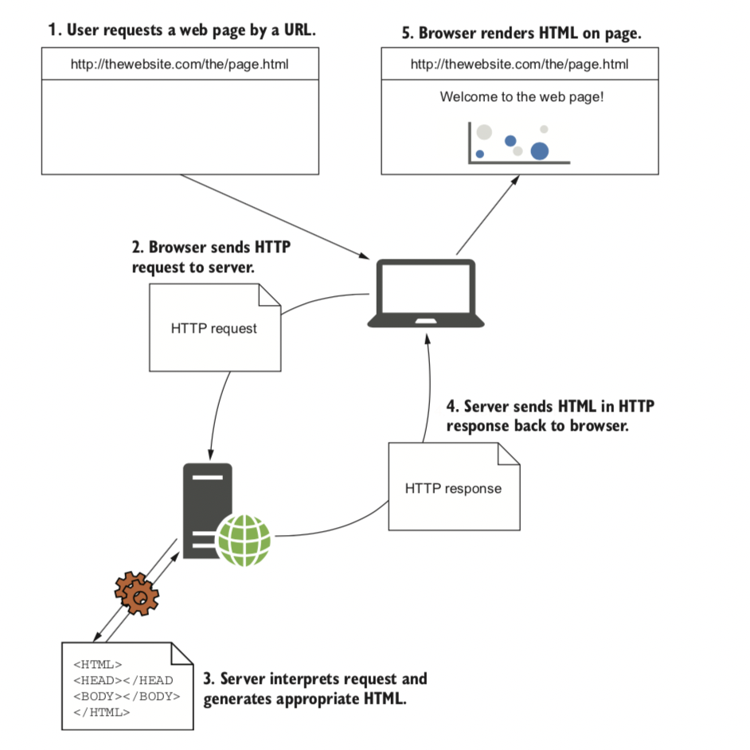

请求网页。用户从请求网页开始，这将导致HTTP请求发送到服务器。服务器解析该请求，生成必要的HTML，然后通过HTTP响应将其发送回去，然后浏览器可以显示该网页。
一旦服务器接收到请求，它将检查它是否有意义，如果有，将生成一个HTTP响应。根据请求的不同，此响应可以是web页面、图像、JavaScript文件或简单的确认。对于本例，我假设用户已经访问了web应用程序的主页，因此服务器使用一些HTML进行响应。将HTML添加到HTTP响应中，然后通过internet将其发送回发出请求的浏览器。
一旦用户的浏览器开始接收HTTP响应，它就可以开始在屏幕上显示内容，但是HTML页面也可以引用服务器上的其他页面和链接。要显示完整的网页，而不是静态的，无色的原始HTML文件，浏览器必须重复请求过程，以获取每个引用的文件。 HTML，图像，用于样式的CSS和用于额外行为的JavaScript文件都使用完全相同的HTTP请求过程来获取。
互联网上发生的几乎所有交互都是这个基本过程的基础。基本的网页可能只需要几个简单的请求即可完全呈现，而现代的大型网页可能需要数百个。例如，Amazon.com主页（www.amazon.com）当前发出298个请求，其中包括6个CSS文件，14个JavaScript文件和245个图像文件！
现在您对该过程有了感觉，让我们看看ASP.NET Core如何动态生成服务器上的响应。
1.3.2 ASP.NET Core如何处理请求？
使用ASP.NET Core构建Web应用程序时，浏览器仍将使用与以前相同的HTTP协议与应用程序进行通信。 ASP.NET Core本身包含服务器上处理请求所发生的一切，包括验证请求是否有效，处理登录详细信息以及生成HTML。
就像一般的网页示例一样，请求过程在用户的浏览器向服务器发送HTTP请求时开始，如图1.8所示。反向代理服务器会在将请求传递给您的应用程序之前捕获该请求。在Windows中，反向代理服务器通常是IIS，而在Linux或macOS上，则可能是NGINX或Apache。
注意 反向代理是负责接收请求并将其转发到适当的Web服务器的软件。反向代理直接暴露给Internet，而底层Web服务器仅暴露给代理。此设置有几个好处，主要是Web服务器的安全性和性能。
该请求从反向代理转发到ASP.NET Core应用程序，每个ASP.NET Core应用程序都有一个内置的Web服务器，默认情况下为kestrel，他负责接收原始请求并构造数据的内部表示形式HttpContext对象，该对象可以由该用用程序的其余部分使用。
根据这种表示，您的应用程序具有创建爱你对请求的适当响应所需的所有详细信息。他可以使用HttpContext中存储的详细信息来生成适当的响应，该响应可能是生成一些HTML，返回“拒绝访问”消息或发送电子邮件，所有这些都取决于应用程序的要求。
一旦应用程序完成了对请求的处理，他将把响应返回到Web服务器，ASP.NET Core Web服务器会将表示形式转换为原始HTTP响应，并将其发送回反向代理，反向代理将其转发给用户的浏览器。